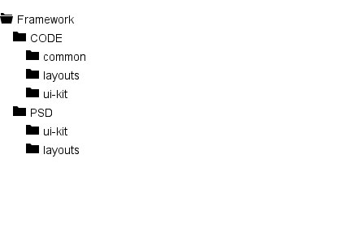

Inside the downloaded package you wil find this:
As you see, there are two main folders "CODE" and "PSD"
Basically, these files are the core of the framework. We strongly suggest to not modify any of these files unless you have experience with HTML/CSS/JAVASCRIPT.
If you have no experience with "LESS" you can use "CSS", you will find these two inside the "ui-kit" folder. In order to start you need to put the following code into your HTML file:
<!-- this code between <head> ... </head> -->
<link rel="stylesheet" href="(way to to the framework folder)/common/css/style.css">
<link rel="stylesheet" href="(way to to the framework folder)/common/css/animations.css">
<link rel="stylesheet" href="(way to to the framework folder)/common/css/owl-carousel/owl.carousel.css">
<link rel="stylesheet" href="(way to to the framework folder)/common/css/owl-carousel/owl.theme.default.css">
<link rel="stylesheet" href="(way to to the framework folder)/common/css/owl-carousel/owl.video.css">
<link rel="stylesheet" href="(way to to the framework folder)/common/css/venobox/venobox.css">
<script src="(way to to the framework folder)/common/js/vendor/modernizr-2.6.2-respond-1.1.0.min.js"></script>
<!-- end -->
<!-- this code directly before </body> -->
<script src="(way to to the framework folder)/js/vendor/jquery-1.11.0.min.js"></script>
<script>window.jQuery || document.write('<script src="(way to to the framework folder)/js/vendor/jquery-1.11.0.min.js"><\/script>')</script>
<script src="(way to to the framework folder)/js/vendor/bootstrap.min.js"></script>
<script src="(way to to the framework folder)/js/vendor/jquery.sticky.js"></script>
<script src="(way to to the framework folder)/js/vendor/owl.carousel.js"></script>
<script src="(way to to the framework folder)/js/vendor/headroom.min.js"></script>
<script src="(way to to the framework folder)/js/vendor/jquery.big-slide.js"></script>
<script src="(way to to the framework folder)/js/vendor/venobox.min.js"></script>
<script src="(way to to the framework folder)/js/vendor/jquery.shuffle.min.js"></script>
<script src="(way to to the framework folder)/js/vendor/jquery.easing.1.3.js"></script>
<script src="(way to to the framework folder)/js/vendor/jquery.lavalamp.min.js"></script>
<script src="(way to to the framework folder)/js/vendor/imgLiquid-min.js"></script>
<script src="(way to to the framework folder)/js/vendor/scrollIt.min.js"></script>
<script src="(way to to the framework folder)/js/vendor/waypoints.min.js"></script>
<script src="(way to to the framework folder)/js/vendor/retina.min.js"></script>
<script src="(way to to the framework folder)/js/vendor/jquery.fadethis.min.js"></script>
<script src="(way to to the framework folder)/js/vendor/jquery.form.min.js"></script>
<script src="(way to to the framework folder)/js/vendor/jquery.validate.min.js"></script>
<script src="(way to to the framework folder)/js/main.js"></script>
<script>$(window).fadeThis({reverse:false});</script>
You will also find these inside "skeleton" folder inside "layouts".
Next you have to insert the styles for the components you want to use:
<!-- headers - let's say you want to use header-01 --> <link rel="stylesheet" href="(way to the framework folder)/ui-kit/headers/css/header-01.css"> <!-- contents - let's say you want to use content-02 --> <link rel="stylesheet" href="(way to the framework folder)/ui-kit/contents/css/content-02.css"> <!-- projects - let's say you want to use projects-03 --> <link rel="stylesheet" href="(way to the framework folder)/ui-kit/projects/css/projects-03.css"> <!-- teams - let's say you want to use team-01 --> <link rel="stylesheet" href="(way to the framework folder)/ui-kit/teams/css/team-01.css">
Using LESS it's even simpler, the first step is the same as in the CSS version.
Second step. In your main '.less' file add the following code:
@import "(way to to the framework folder)/less/bootstrap/bootstrap.less"; @import "(way to to the framework folder)/less/font-awesome/font-awesome.less"; @import "(way to to the framework folder)/less/variables.less"; @import "(way to the framework folder/less/mixins.less"; @import "(way to to the framework folder)/less/global.less"; <!-- headers - let's say you want to use header-01 --> @import "(way to the framework folder)/ui-kit/headers/less/header-01.less"; <!-- teams - let's say you want to use team-01 --> @import "(way to the framework folder)/ui-kit/teams/less/team-01.less"; @import "../(way to to the framework folder)/less/navbar.less"; @import "../(way to to the framework folder)/less/header.less";
The last step is the same as in the CSS version
If you don't understand exactly how this works you can take a look inside the "layouts" folder. There you will find, for example "Layout-01" and inside that folder you have another folder called "LESS" and there you will find exactly how it's working.